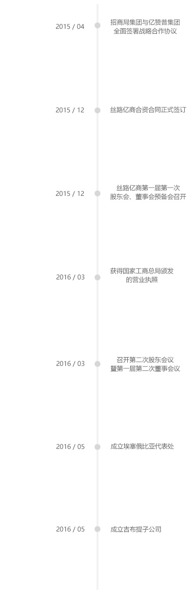

中国：
2016/06/13
星期二
晴
25 °C
公司简介 company profile
3. 丝路亿商：企业定位
一个目标: 落实国家一带一路战略，主动配合国家战略方针，利用自身资源及优势，积极参与“丝路驿站”全球部署及建设当中，为丝路驿站的建设提供必要的顶层架构规划与设计，建立起全球领先的外贸综合服务平台，为中国“走出去”战略以及中资企业海外投资提供良好的贸易环境。
两个平台: 以全球港口联盟为基础的贸易便利化平台。经过多年的发展，招商局集团在海外市场的港行业务已发展得相当成熟。目前已建立29个港口资源，遍布全球18个国家和地区。丝路亿商作为招商局重点投资企业，依托招商局已建立起的成熟的港口基础，同时依靠自身业务发展，更快更好更稳固地建立起全球港口网络，为海上丝绸之路提供必要的贸易平台。以大数据为基础的金融和产业支持平台。丝路亿商的另一大股东亿赞普集团是全球领先的大数据服务公司，致力于发展我国互联网跨境贸易及大数据应用。现在已在海外90余个国家及地区有部署及数据统计。丝路亿商依托亿赞普在海外的大数据平台以及互联网跨境服务，利用其数据统计收集的优势，为海外投资企业提供必要的数据和信息支持，为中资企业海外投资扫清贸易壁垒。
三项业务：
• 贸易便利化业务（通关）
建立中外跨境贸易的高数公路，减少收费站或加快收费效率，服务一带一路战略，助力中国企业产品和产能快速输出全球。
• 金融服务业务（通兑）
建立互联网+物联网为支撑的跨境贸易金融服务平台，成为国际贸易高速公路上的加油站。
• 大数据业务（通链）
利用大数据服务企业全球产业链和贸易链布局，为中外产能重构提供导航指引。
股东介绍
招商局集团(简称“招商局”)是国家驻港大型企业集团，经营总部设于香港，亦被列为香港四大中资企业之一。截至2015年底，招商局集团总资产 9767亿元，管理总资产6万亿元。2004-2015年招商局连续十一年获国务院国资委评为A级中央企业。
招商局是中国民族工商业的先驱，创立于1872年晚清洋务运动时期。140余年来，曾组建了中国近代第一支商船队，开办了中国第一家银行、第一家保险公司等，开创了中国近代民族航运业和其它许多近代经济领域，在中国近现代经济史和社会发展史上具有重要地位。1978年，招商局独资开发了在海内外产生广泛影响的中国第一个对外开放的工业区——蛇口工业区，并相继创办了中国第一家商业股份制银行——招商银行，中国第一家企业股份制保险公司——平安保险公司等，为中国改革开放事业探索提供了有益的经验。
目前，招商局业务主要集中于交通(港口、公路、能源运输及物流、修船及海洋工程)、金融(银行、证券、基金、保险)、房地产等三大核心产业。
亿赞普集团是世界领先的大数据服务公司和跨境贸易服务平台，成立于2008年。业务遍及亚太、拉美、欧洲、中东等多个国家和地区，旗下拥有大数据、金融、贸易便利化三大业务板块。其大数据解决方案服务包括沙特王室、厄瓜多尔政府等海外政府机构及瑞典Teliasonara等全球顶级电信运营商，进入了海外90余个国家。2013年，亿赞普被厄瓜多尔总统候选人加雷尔选定为独家合作伙伴，为其竞选提供大数据服务并助其成功赢得大选，成为全球通过大数据服务总统大选的两个经典案例之一。亿赞普也连续三年为我国“两会”提供大数据服务。 亿赞普集团自成立以来，始终致力于基于大数据技术开展跨境贸易便利化创新，开创跨境贸易在信息互通、港口物流、跨境支付、资金清算等各领域的创新建设，为我国企业搭建低成本、高效、安全的对外贸易综合服务平台，助力企业提升国际竞争力，在全球新经济格局中，开拓更广阔市场空间。 亿赞普集团在我国推动“一带一路”战略发展政策中也起到积极作用。收购意大利帕尔马机场和参与建设全球各地“丝路驿站”，为“一带一路”战略提供重要的贸易服务平台。与此同时，通过自身业务的积累与发展提供必要的数据技术支持，为中国“走出去”战略扫清贸易屏障
- 大数据 - 亿赞普集团在大数据海量并发处理领域有深厚的积累，在2013年通过大数据平台协助厄瓜多尔总统竞选。
- 跨境电商平台 - 亿赞普集团的跨境贸易模式F2C 工厂直达用户模式，引领互联网跨境贸易新趋势。
- 跨境清结算 - 亿赞普集团旗下结算平台和金融服务平台——钱宝，是中国目前最大的跨境第三方支付平台。
- 贸易便利化 - 亿赞普的“丝路驿站”是国家“一带一路”战略统筹规划的重要部署和落地行动
发展历程 DEVELOPMENT HISTORY
价值观 COMPANY VALUES

办公环境 OFFICE ENVIRONMENT
山海全景式5A甲级写字楼
办公环境
办公环境
公司前台
一、java工程师（深圳，3名）
- 【岗位职责】
- 1、参与平台的技术架构设计和优化；
- 2、参与项目的功能开发和单元测试；
- 3、对现有程序进行维护和优化，修复测试中发现的程序缺陷，确保平台安全稳定运行；
- 4、对开发工程师的工作作出指导，并参与开发、测试和运维规范制定；
- 5、组织代码走读、单元测试以及配置管理工作；
- 6、进研究和引进优秀的研发工具和技能技巧并进行分享。
- 【岗位要求】
- 1、本科及以上学历，计算机相关专业，研究生更佳；
- 2、五年及以上Java开发经验，精通Java语言和相关开发工具，具备较高的程序开发及调试能力；
- 3、精通Spring框架以及AOP、DI/IOC，熟悉iBATIS、C3P0、JSTL和Velocity
- 4、熟悉AJAX、JavaScript和HTML
- 5、对软件设计模式有深入的理解，具备较佳的系统设计能力和优秀的数据库设计和开发能力；
- 6、具备金融相关行业研发经验，有较强资金流相关开发经验者优先。
- 7、强调自我学习能力
二、前端工程师（深圳2名）
- 【岗位职责】
- 1. 负责web产品的前端开发、需求实现；
- 2. 使用合理的架构将设计产品转换为格式良好的html；
- 3. 与设计、后台开发人员等保持良好沟通，能快速理解、消化各方需求，并落实为具体的开发工作；
- 4. web前端新技术的预研与开发。
- 【岗位要求】
- 1. 计算机软件或相关专业，本科及以上学历，三年以上相关工作经验；
- 2. 熟练掌握HTML/HTML5、CSS/CSS3、javascript/jquery seajs、ajax、DOM等前端技术；
- 3. 能轻松写出符合W3C标准、兼容主流浏览器的代码；
- 4. 具备强烈的责任心与进取心，能承受较大工作压力；
- 5. 具有良好的沟通与协调能力，具有团队合作精神，客户服务意识良好；
- 6. 具有以下经验者优先：前端架构/性能优化。
三、需求分析师（深圳2名）
- 【岗位职责】
- 1、根据概要需求（客户及内部需求）编写详细需求规格说明书；
- 2、系统规划，与市场人员进行前期调研和产品设计工作，编写调研报告和项目解决案；
- 3、参与系统功能验收工作及用户手册、新增产品功能培训资料的编写；
- 4、负责客户(及内部）需求调研及需求反馈的分析；
- 5、配合测试人员编写测试计划、测试用例、测试报告的编写、问题缺陷的发现及跟踪，产品用户手册编写等；
- 【岗位要求】
- 1、年龄：26—35，本科以上学历，3年以上工作经验，其中2年以上软件需求分析经验，成功参与过大型产品项目的需求分析工作；有2年以上大型互联网网站需求分析经验者优先；有开发经验者优先；
- 2、熟悉需求调研方法，较强的业务流程及业务模型分析设计能力；善于控制需求，进行版本范围及项目范围管理；丰富的客户（及内部）沟通经验，能快速把握需求的核心要点；
- 3、熟悉软件工程理论，掌握软件需求获取与分析方法，至少熟悉一种开发语言和一种数据库。
- 4、有较强的文档编写能力；熟悉CMM文档规范者优先；
- 5、良好的英语听说读写水平，有独立查阅英文专业资料的能力；
- 6、需有较强的团队协作精神。有效的沟通技巧，在团队协作中具有精炼思维和解决复杂问题的能力，具备良好的学习能力，责任心强，能够承受较大的工作压力；
深圳
- 地址：中国深圳市南山区望海路1166号招商局广场18楼A-C座
- 电话：+（86）755 21618294
- 传真：+（86）755 88272763
- 邮编：518067
北京
- 地址：北京市朝阳区北辰西路8号院北辰世纪中心A座1525
- 电话：+（86）10 84376716
- 传真：+（86）10 84376716
- 邮编：100101
吉布提 Djibouti
- SILK ROAD E-MERCHANTS DJIBOUTI CO. FZE
- Address：LOB-103，Djibouti Free Zone，Road of Venise, Republic of Djibouti. B.P.6420
- Mobile: +253-7709 4702 (MING HUALONG)